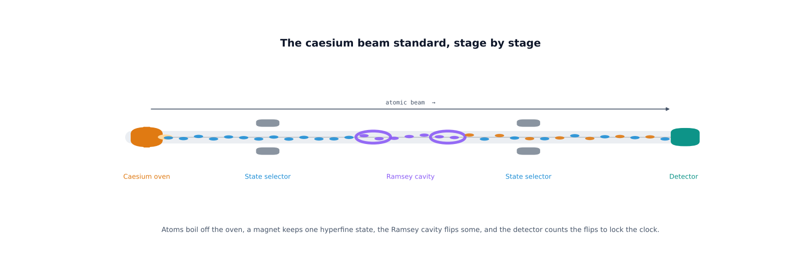

Savvy Security LLC · Proof of Concept
Teardown: From a Four-Stroke Engine to a Caesium Atomic Clock
For elvarofficial, who built the teardown skill and gave it away under an open licence. This article is our proof that it works — and an invitation for everyone else to take it apart.
Every so often a piece of open-source software is good enough that the right response is not a review but a demonstration. teardown is one of those. It is a skill for Claude Code, published on GitHub by a developer who goes by elvarofficial, and its premise is simple and a little audacious: ask how any machine works, and it writes a single offline web page where that machine runs in 3D and you can take it apart.[1]
I don't write code by hand. What I do is turn vague ideas into exact instructions, and over this project I pointed that skill — and a lot of back-and-forth with Claude — at three machines in a row: a four-stroke engine, a mechanical cuckoo clock, and finally a caesium atomic clock, the instrument that defines the second. This is the record of what we built, how it rendered, and — because this is a security firm's blog — what you should verify before you believe any of it.

The software: a skill that takes machines apart
teardown is not an app you launch. It is a skill — a packaged set of instructions you install into Claude Code once, after which you can ask in plain English for a simulator and get a finished, offline HTML file back.[1] Under the hood each page is built on three.js, the MIT-licensed 3D library that lets a non-programmer stand up a 3D scene in an afternoon.[4] The skill itself is built on claude-motion by whaleyxbt, and it is honest about that lineage right in its README.[1][2]

Installation is a single command, npx skills add elvarofficial/teardown -g -a claude-code, followed by a one-time npm install and a headless-browser download; it wants Node.js 20 or newer.[1] The repository ships three worked examples — a V8 engine, a Cessna landing gear and a Strandbeest — so you can see the output before you build your own.
What we built, in three steps
Step one, a four-stroke engine. The first ask was the format's flagship: a single-cylinder engine you can take apart. The slider-crank geometry is exact — piston position comes straight from the crank angle — and the panels read genuine derived values: the stroke (intake, compression, power, exhaust), cylinder pressure from an adiabatic model, valve lift, and a live pressure–volume indicator loop. It was proof the format could carry real numbers, not just a spinning model.
Step two, a cuckoo clock. A cuckoo clock is really two engines in one case: a weight-driven going train that keeps time off a swinging pendulum, and a strike train that pumps the bellows and shoves the bird out the door on the hour. The pendulum is the only timekeeper — everything else counts its beats — so lengthening the pendulum visibly makes the clock lose time, exactly as the real physics (T = 2π√(L/g)) says it should. On the hour the two bellows play the high cu and the low ckoo, once per hour-count.
Step three, a caesium atomic clock. Then we aimed at the hardest target in horology: the instrument that defines the second. This is where the project became something worth dedicating to its creator.
The atomic clock, stage by stage
The 2019 SI defines the second by fixing the caesium frequency: the unperturbed ground-state hyperfine transition of caesium-133 is, by declaration, exactly 9,192,631,770 hertz.[5] A caesium clock doesn't measure the second so much as realise it. Our build lays the whole apparatus out as a vacuum beam tube you can fly into, component by component.

Caesium-133's outer electron and its nucleus couple into two hyperfine ground states, F=3 and F=4. The clock works the field-insensitive transition between them, and it uses Ramsey's method of separated oscillatory fields — two microwave zones with a drift in between — to make the resonance razor-sharp, the technique that won Norman Ramsey a share of the 1989 Nobel Prize.[6] The detector count peaks dead on resonance, and a servo dithers the microwave and steers a quartz oscillator onto that peak. When it is centred, the quartz is locked to caesium, and a divider cuts the 9,192,631,770 Hz down to one pulse per second.[7]
In the live page you can click any stage to fly into it, and every stage opens further: the oven into its boron-nitride crucible, caesium charge, heater coil and collimator; the magnets into yoke, pole shoes and field coils; the electronics into the crystal, the multiplier, the servo and the divider. Floating labels name each part; an exploded view spreads them apart; a guided tour walks the whole chain. The atoms are drawn as matter-wave packets whose fringe spacing tracks their speed — faster atoms, tighter fringes, the de Broglie relation made visible — and an atom crossing the cavity shimmers between cyan and amber, a picture of a quantum superposition before it is measured.
Proof of concept: the code
The whole clock is one self-contained HTML page. It pulls three.js from a pinned CDN build and otherwise carries all of its own logic, which is the point of the teardown format: one file, offline, nothing to install. The physics on the screen is derived, not decorative.

ramseyP() is the Ramsey fringe the servo locks to; the shader gives each atom speed-dependent fringes and a superposition shimmer. Full source is in this post's code/ folder.An honest note on what this is. This is a faithful simulation and visualisation of how a caesium clock works, not a literal CAD model and not a real atomic reference. The quantum physics is modelled from the real quantities — the hyperfine states, the 9,192,631,770 Hz definition, the Ramsey interrogation, the servo lock. The time it displays is read from your device's network-synchronised clock and formatted to Eastern Time (America/New_York, so it handles the EST/EDT switch on its own); no web page can contain an actual caesium oscillator. The stability figures are representative of commercial caesium beam standards (around 10−12); laboratory fountains do far better. We say what it is.
Credit where it is due
None of this would exist without the people who gave their work away. elvarofficial wrote and open-sourced the teardown skill that makes "take this machine apart in 3D" a one-line request.[1] It stands on whaleyxbt's claude-motion runtime, and its sound work traces to CC0 samples from Freesound prepared in Barty-Bart's motion-graphics project.[2][3] The 3D itself is three.js, MIT-licensed and maintained by mrdoob and hundreds of contributors.[4] Our part was the prompting, the physics checks and the finish work. The foundation was theirs, freely offered, and that is worth naming out loud.
Why a security firm cares about a 3D toy
Because the pattern underneath it is the one we work in every day. One person with a clear idea, open-source foundations and an AI assistant can now ship real, inspectable software — and "inspectable" is the whole game. The teardown output is a single HTML file you can read end to end. Its one outside dependency is a pinned, versioned library from a CDN, which is exactly the kind of supply-chain detail a defender should pin or self-host rather than trust by default. The honest move, every time, is to publish the source, state plainly what is modelled versus real, and let people verify it. That is what we did here, and it is what we would tell any client shipping an AI-built product to do.
Take it apart yourself
The best way to understand this project is to open it and start clicking. The three live builds below run entirely in your browser — no install, no account. Then go install the skill and build your own machine.
Run the builds. Each opens in your browser; drag to orbit, click a part to dive in.
Launch the atomic clock The cuckoo clock The engine The teardown skill on GitHubSources
All links accessed November 1, 2026. Figures 1 to 4 were made for this article from the three builds and the project's own README; the code excerpt in Figure 4 is from the atomic clock's source, included in this post's code/ folder.
- elvarofficial. teardown — a Claude Code skill that turns any machine into a 3D simulator you can take apart. README, source and examples; MIT licence. github.com/elvarofficial/teardown
- whaleyxbt. claude-motion (MIT) — the runtime, frame capture and review rules teardown is built on. github.com/whaleyxbt/claude-motion
- Barty-Bart. motion-graphics — the CC0 Freesound samples, prepared for reuse, credited by teardown. github.com/Barty-Bart/motion-graphics
- mrdoob et al. three.js, the MIT-licensed JavaScript 3D library. github.com/mrdoob/three.js
- BIPM. The definition of the second (SI), fixing ΔνCs = 9,192,631,770 Hz for the caesium-133 ground-state hyperfine transition. en.wikipedia.org/wiki/Second
- Norman F. Ramsey — the method of separated oscillatory fields (Ramsey interferometry), 1989 Nobel Prize in Physics. en.wikipedia.org/wiki/Ramsey_interferometry
- Overview of the caesium beam / fountain standard and how the oscillator is disciplined to the atomic resonance. en.wikipedia.org/wiki/Atomic_clock
- Anthropic. "Claude Code overview." code.claude.com/docs/en/overview